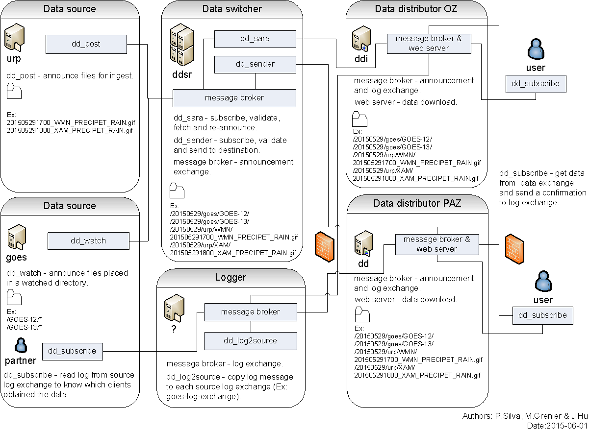

$Date$
[français]
MetPX is a collection of tools created to support data acquisition, routing, and dissemination in a meteorological context. There are two main applications in the MetPX suite: MetPX-sundew is the legacy WMO-GTS supporting message switching system. MetPX-Sundew transfers accepts, transforms, and delivers individual products. MetPX-Sarracenia is the next generation tree replication system, currently under development, which transfers filtered, but largely un-modified directory trees of products on behalf of data sources. While Sarracenia leaves legacy compatibility behind in order to address more modern concerns, sundew remains necessary to interface to legacy systems.
[Sarracenia Documentation]
[Sundew Documentation]
[Download]
[Download]
[Getting Source Code]
[References & Links]
[ mailing-lists: metpx-devel.,
metpx-commit. ]
[ Main Project page: Sourceforge ]
MetPX-Sarracenia is a data duplication or distribution engine that leverages existing standard technologies (web servers and the AMQP brokers) to achieve real-time message delivery and end to end transparency in file transfers. Whereas in Sundew, each switch is a standalone configuration which transforms data in complex ways, in sarracenia, the data sources establish a structure which is carried through any number of intervening switches until they arrive at a client. The client can provide explicit acknowledgement that propagates back through the network to the source. Whereas traditional file switching is a point-to-point affair where knowledge is only between each segment, in Sarracenia, information flows from end to end in both directions.
At it's heart, sarracenia exposes a tree of web accessible folders (WAF), using any standard HTTP server (tested with apache). Weather applications are soft real-time, where data should be delivered as quickly as possible to the next hop, and minutes, perhaps seconds, count. The standard web push technologies, ATOM, RSS, etc... are actually polling technologies that when used in low latency applications consume a great deal of bandwidth an overhead. For exactly these reasons, those standards stipulate a minimum polling interval of five minutes. Advanced Message Queueing Protocol (AMQP) messaging brings true push to notifications, and makes real-time sending far more efficient.

Sources of data announce their products, switching systems pull the data using HTTP or SFTP onto their WAF trees, and then announce their trees for downstream clients. When clients download data, they may write a log message back to the server. Servers are configured to forward those client log messages back through the intervening servers back to the source. The Source can see the entire path that the data took to get to each client. With traditional switching applications, sources only see that they delivered to the first hop in a chain. Beyond that first hop, routing is opaque, and tracing the path of data required assistance from administrators of each intervening system. With Sarracenia's log forwarding, the switching network is completely transparent to the sources. Diagnostics are vastly simplified.
For large files / high performance, files are segmented on ingest if they are sufficiently large to make this worthwhile. Each file can traverse the switch network independently, and reassembly is only needed at end points. A file of sufficient size will announce the availability of several segments for transfer, multiple threads or transfer nodes will pick up segments and transfer them. The more segments available, the higher the parallelism of the transfer. In many cases, Sarracenia manages parallelism and network usage without explicit user intervention. As intervening switches do not store and forward entire files, the maximum file size which can traverse the network is maximized.
Where sundew supports a wide variety of file formats, protocols, and conventions specific to the real-time meteorology, sarracenia takes a step further away from specific applications and is a ruthlessly generic tree replication engine, which should allow it to be used in other domains. The prototype client, dd_subscribe, in use since 2013, implements the consumer end of the switch's functions, and is the only component present in current packages. The rest of MetPX-Sarracenia should be included in packages by the Fall of 2015.
Sarracenia is expected to be a far simpler application than sundew from every point of view: Operator, Developer, Analyst,
Data Sources, Data consumers. Sarracenia imposes a single interface mechanism, but that single mechanism is completely portable
and generic. It should run without issue on any modern platform (Linux, Windows, Mac)
Sarracenia Documentation
Why not just use Rsync?
There are a number of tree replication tools that are widely used, why invent another? Rsync and other tools are
comparison based (dealing with a single Source and Destination) Sarracenia, while it does not require or use multi-casting,
is oriented towards a delivery to multiple receivers. Where rsync synchronization is typically done by walking a
large tree, that means that the synchronization interval is inherently limited to the frequency at which you can
do the file tree walks (in large trees, that can be a long time.) Each file tree walk reads the entire tree
in order to generate signatures, so supporting larger numbers of clients causes large overhead. Sarracenia avoids
file tree walks by having writers calculate the checksums once, and signal their activity directly to readers
by messages, reducing overhead by orders of magnitude. Lsync is a tool that leverages the INOTIFY features of
Linux to achieve the same liveness, but the checksum management and log communication would need implementation,
and it is obviously not portable. Doing this through the file system is thought to be cumbersome and less
general than explicit middleware message passing, which also handles the logs ins a straight-forward way.
One of the design goals of sarracenia is to be end-to-end. Rsync is point-to-point, and does not support the "transitivity"
of transfers across multiple switching engines that is desired. On the other hand, the first use case for Sarracenia
is the distribution of new files. Updates to files are not common, and so file deltas are not yet dealt with efficiently.
ZSync is much closer in spirit to this use case, and Sarracenia may adopt zsync as a means of handling deltas,
but it would likely place the signatures in the announcements.
MetPX-Sundew
MetPX-sundew is a message switching system for use with World Meteorological Organization (WMO) Global Telecommunications System (GTS) circuits based on TCP/IP. The system is already production quality for a limited set of features and is in production use at the CMC as the core of our national switching infrastructure for bulletins, as well as file data (satellite, RADAR, numerical outputs, charts & imagery...) It is used to ingest from a NOAAPORT feed, as well as two GTS protocol links, feed several hundred clients in both socket and file based feeds, provide Canadian participation in Unidata and TIGGE via a bridge to LDM, as well as NAEFS via direct file transfer. MetPX is unique in its ability to run fine-grained routing with low latency and high performance. Developed at the Canadian Meteorological Centre of Environment Canada for our own use. Licensed under GPL for collaborative development, MetPX aims to be to meteorological switching what apache is to web serving.
Protocol support:
features:
There are three modules in the project right now. Modules of MetPX are named after species of plant which are endangered in Canada (see Species at Risk for more details.)
Platform: we build packages for Debian Derived Linux (Debian Sarge, Etch. any Ubuntu will do). Any modern Linux should do. (stock 2.6 or 2.4 with many patches.) Python >2.3
Licensing: GPLv2
Sundew Documentation
Sundew is rather stable for now, current work is on improving the installation process by
implementing Debian packages. A package for the sundew module is available from
the sourceforge site, in either source or .deb form. We hope to produce packages for
columbo at some point.
Currently internal installations are done, one at a time, from source. Development
is done on the trunk release. When we install operationally, the process consists
of creating a branch, and running the branch on a staging system, and then implementing
on operational systems. There are README and INSTALL files that can be used for
installation of sundew. One can follow those instructions to get an initial installed
system.
It is critical to install the cron cleanup jobs (mr-clean) since otherwise the
server will slow down continuously over time until the system slows to a crawl. If you
Best bet is to subscribe to the mailing list and let us know what is stopping you from
trying it out, it could inspire us to work on that bit faster to get some collaboration
going.
with those explanations, feel free to grab a snapshot can be obtained using subversion via:
Getting Source Code
svn co https://svn.code.sf.net/p/metpx/code/trunk
Available for anonymous read-only access. One can also download a stable release by doing an checkout by accessong the currently highest numbered branch.
AMQP
AMQP is the Advanced Message Queuing Protocol, which emerged from the financial trading industry and has gradually
matured. Implementations first appeared in 2007, and there are now several open source ones. AMQP implementations
are not JMS plumbing. JMS standardizes the API programmers use, but not the on the wire protocol. So typically, one cannot
exchange messages between people using different JMS providers. AMQP standardizes for interoperability, and functions
effectively as an interoperability shim for JMS, without being limited to Java. AMQP is language neutral, and message
neutral. there are many deployments using python, C++, and ruby. One could adapt WMO-GTS protocols very easily to
function over AMQP. JMS providers are very Java oriented.
Sarracenia relies heavily on the use of brokers and topic based exchanges, which were prominent in AMQP standards efforts prior
to version 1.0, at which point they were removed. It is hoped that these concepts will be re-introduced at some point. Until
that time, the application will rely on pre-1.0 standard message brokers, such as rabbitmq.
References & Links
Other, somewhat similar software, no endorsements or judgements should be taken from these links: